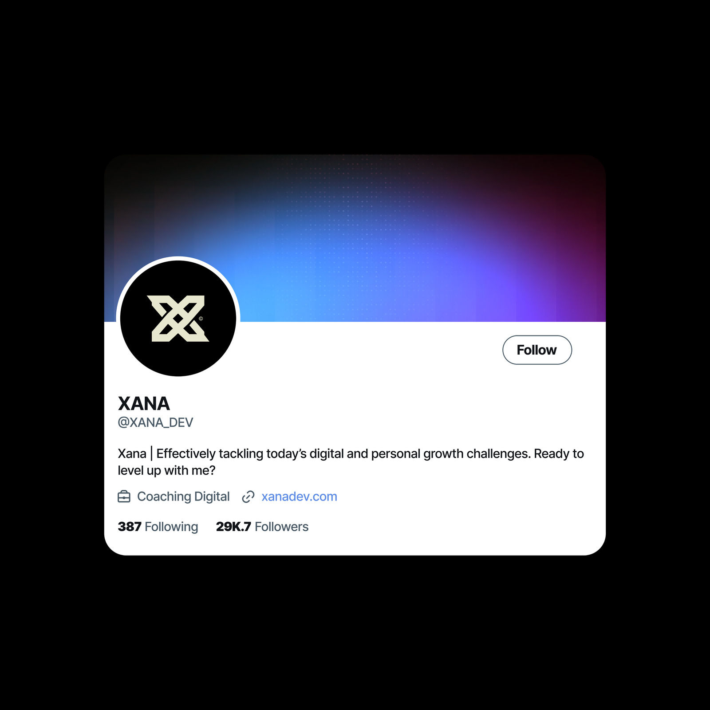

Projet 03 · Identité digitale
XANA

Contexte
Une identité qui vit d'abord à l'écran : un profil, des réseaux, une présence digitale. Le nom XANA porte une promesse de modernité et de maîtrise technique. L'image devait être à la hauteur du mot.
Mission
Construire un univers visuel pensé pour les écrans : couleurs profondes, lisibilité immédiate, déclinaisons qui fonctionnent en petit (avatar, icône) comme en grand (présentation, maquette).
Direction artistique
Une base bleue qui glisse vers le violet, un équilibre entre présence et sobriété. Le cadrage met le nom au centre : pas de bruit autour, la marque se lit d'abord, se découvre ensuite.
Livrables
- Identité digitale complète
- Profil et déclinaisons d'écran
- Palette et dégradés maîtrisés
- Maquettes d'application
Résultat
Une présence digitale qui inspire la maîtrise technique avant même le premier échange. Le genre d'identité qui donne envie de cliquer pour en voir plus.